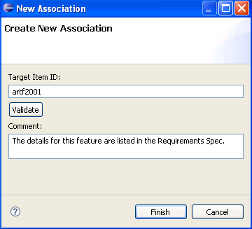

When a task is related to other CollabNet
TeamForge
items such as documents,
tracker artifacts, file releases, or news items, you can connect the document to the other
item by creating an association.
Creating associations between items enables you to define relationships, track
dependencies, and enforce workflow rules. Some example uses for task associations
include:
- Associating tasks with a master document describing the project, such as a
project plan.
- Associating a task with the deliverables it requires, such as a requirements
document, completed code, or a file release.
- Associating a task with items on which it is dependent, such as closed tracker
artifacts.
You can create a task association in several ways.
- Right-click a task in the CollabNet Sites
view, select Create association and specify the item to be associated.
- In the CollabNet Sites
view, drag a task and drop it onto another item in the tree.
- If you're working in the artifact editor, follow the steps below.
-
In the editor, expand the Associations section, and click
Add Association.
The New Association dialog appears.
-
In the Target Item ID field, enter the ID of the item
you want to associate, for example, "artf2001".

-
Enter a comment describing your association.
-
Click Finish.
The association is displayed in the Associations
section of your artifact, as a table row with a "+" icon.
Note: The
association is stored locally until you submit your task.
-
Click Submit for your changes to be submitted to the
server.
The "+" icon that was displayed for that association, disappears. If you
do not submit your task, the next time you open the application, the association is
displayed with the "+" icon.